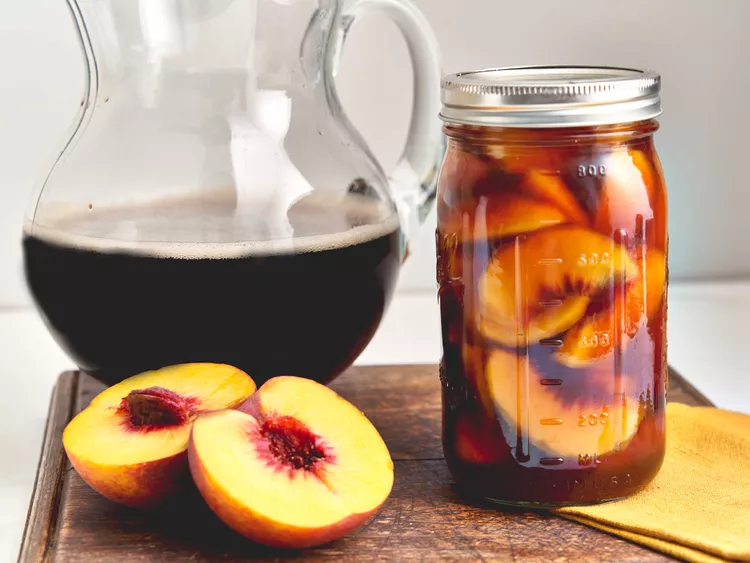

Sweet Tea Peaches

Description
Try these sweet tea peaches for a unique dessert or to " "experience a Southern summer in a jar"!
Once peaches are gone, the remaining tea is delicious in craft cocktails!
Prep time is 15 minutes, cook time is 10 minutes.
Ingredients
- 8 to 10 large peaches
- 3 family-size tea bags
- 2 quarts water
- 1 cup sugar
Steps
-
Bring a large pot of water to a boil.
Make an ice bath in a large bowl.
Place peaches in the boiling water for 30 seconds to 1 minute, working in batches if necessary.
Remove peaches from boiling water and place in the ice bath until cool.
- Peel and pit each peach then cut into wedges. Place cut peaches in clean sterile jars.
-
Add tea bags and 6 cups water to a large sauce pan.
Bring to a boil, turn off heat, and allow to steep for 5 minutes.
Remove tea bags from pot and stir in sugar until dissolved.
Stir in remaining water and pour over peaches in jars until they are fully covered.
Place tops on jar and process as desired.
Alternatively, refrigerate peaches at least 4 hours and up to 1 week.